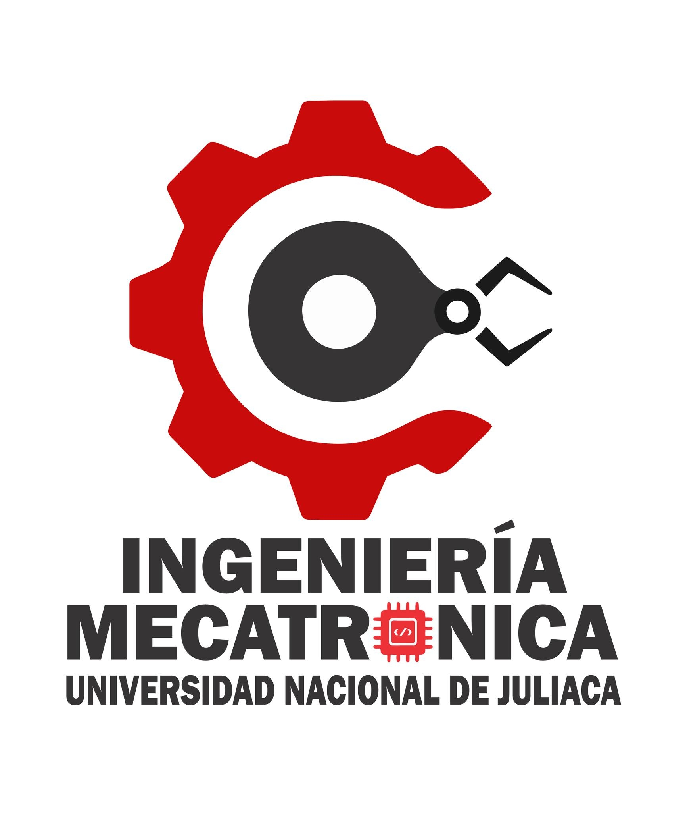

Sistema inteligente de reciclaje de latas desarrollado por estudiantes de Ingeniería Mecatrónica de la Universidad Nacional de Juliaca. El proyecto utiliza Arduino Nano, sensores, mini cilindros neumáticos y Raspberry Pi 5 para automatizar el reciclaje y recompensar a los usuarios.
El sistema permite reciclar latas de gaseosa mediante un mecanismo automatizado de detección y compactación.
El Arduino Nano controla mini cilindros neumáticos encargados de aplastar las latas automáticamente.
La Raspberry Pi 5 funciona como interfaz principal mostrando recompensas y códigos para el usuario.
El usuario introduce una lata de gaseosa en el sistema ECO RECOMPENSA. Un sensor detecta la presencia de la lata y el Arduino Nano activa los mini cilindros neumáticos para compactarla automáticamente. Posteriormente, otro sensor verifica que la lata haya sido aplastada correctamente y permite que caiga por un orificio interno del sistema. Cuando la lata pasa por el punto final de reciclaje, un sensor adicional detecta el reciclaje exitoso y el Arduino Nano envía información mediante comunicación serial hacia la Raspberry Pi 5. Finalmente, la Raspberry Pi 5 muestra una interfaz gráfica donde aparece un código de recompensa para el usuario por contribuir al reciclaje y al cuidado del medio ambiente.
Desarrollador del Proyecto
Integrante del Proyecto
Integrante del Proyecto
Integrante del Proyecto
Integrante del Proyecto
Universidad Nacional de Juliaca

📧 12willianscondori@gmail.com
Enviar Correo